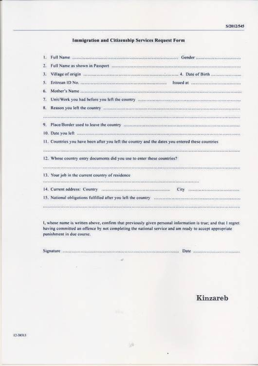

Tournez le bouton de gauche pour écouter les interviews
Appuyez sur les boutons du bas pour changer de chapitre
Chapitre 4 : A l’étranger, le bras long de l’Erythrée
Même à l’étranger, les Erythréens n’échappent pas à l’emprise de leur pays natal. “Mon frère a un petit magasin à Asmara", témoigne Biniam Simon. "L’an dernier il devait renouveler sa licence. L’administration lui a demandé le formulaire indiquant que je payais la taxe des 2% pour la lui donner. Je ne la paye pas, je ne sais pas s’il a réussi à obtenir sa licence”, explique Biniam Simon.
Cette taxe, qui représente 2% des revenus de l’émigré, est imposée à la diaspora par les ambassades pour accéder aux services consulaires : obtenir un certificat de naissance, organiser un enterrement ou acheter une maison. “L’ambassade ne forcera pas ses ressortissants à payer”, explique Amanuel Ghirmay. Du moins, pas de manière directe. Ex-éditeur du BBC World Service Afrique, Martin Plaut accuse l’ambassade de Londres d’extorquer les réfugiés. Plusieurs autres pays, comme les Etats-Unis, l’Allemagne et le Canada ont déjà menacé de fermer les consulats ou de renvoyer les diplomates soupçonnés.
“Il n’y a pas d’estimations officielles du montant que représente ces 2%. C’est assez arbitraire”, poursuit Biniam. “Si vous n’avez pas payé depuis sept ans et que vous êtes chauffeur de taxi, vous allez devoir payer sept fois 2% du revenu moyen d'un chauffeur de taxi.” Si le ressortissant érythréen ne travaille pas, il devra payer 2% du total des aides qui lui sont versées par l’Etat. Ce système fonctionne par "l’intimidation pratiquée par les ambassades" et les "représailles que subissent les familles restées au pays”, selon les termes employés par Léonard Vincent dans Les Erythréens. “Cette taxe est une des sources majeures du revenu érythréen”, dénonce Felix Horne de Human Rights Watch.
 Les Erythréens doivent signer un formulaire de regret avant de retourner dans leur pays, Africa Express
“Si un Érythréen veut retourner dans son pays, il devra signer un document appelé le ‘formulaire de regrets’, payer les 2% s’il ne l’a pas fait et il sera autorisé à rentrer,” explique Biniam. Pour obtenir ce papier il faut se rendre à l’ambassade de l’Erythrée, rue de Staël à Paris. L’ambassade ? Une farce pour Biniam. “L’ambassadrice n’est qu’un symbole, elle va aux cérémonies et répond aux invitations mais le vrai pouvoir est entre les mains de celui qui contrôle la diaspora en les espionnant,” dit-il. “Il recrute beaucoup de personnes qui font ce travail pour lui. Ils arrivent en tant que réfugiés mais travaillent pour le gouvernement. Si les Érythréens critiquent le pays, leurs propos se retrouveront à l’ambassade. Ce qui signifie que leurs familles sont en danger”, raconte le journaliste.
Cette taxe des 2% n’est pas le seul moyen de renflouer les caisses de l’Etat par des financements extérieurs au pays. Le pays bénéficie aussi d’aides d’institutions et de l’Union européenne notamment malgré un rapport des Nations Unies qui affirme que des violations des droits de l'Homme ont été et sont commis en Erythrée. L’UE a ainsi bloqué 200 millions d’euros dans le cadre du programme appelé “National Indicative Program” en novembre 2015. Cette somme doit supporter plusieurs domaines comme la défense des droits de l’homme ou le secteur de l’énergie, selon des proches du dossier. “Il n’y a pas assez de transparence pour que l’on puisse savoir où va l’argent,” s’inquiète Klara Smiths, l’une des auteurs du rapport sur le trafic humain dans le Sinaï. “Les associations ne peuvent pas agir librement en Érythrée. Par exemple, le gouvernement peut forcer des salariés d’une entreprise étrangère à dire qu’ils ont été payés alors que l’argent va en fait être utilisé dans le domaine de la défense.”
« Nous avons supplié, oui, supplié, l’Union européenne de ne pas donner de support financier à l’Erythrée »
“Nous avons supplié, oui, supplié, l’Union européenne de ne pas donner de support financier à l’Erythrée mais ils ne nous ont pas écoutés,” raconte Biniam. Un souhait partagé par Léonard Vincent : “L’accord financier et politique qui est en train de se construire avec l’UE n’a pas dans l’esprit érythréen d’autre but que d’assurer la subsistance de la dictature.” Une pétition a même été lancée pour tenter de stopper cet accord.
De son côté, l’Union Européenne tente de rassurer. Klara, qui échange souvent avec la commission chargée du dossier, affirme : “L’accord a été conclu mais l’argent n’a pas encore été transféré. Il faut que les projets soient aussi approuvés, un par un. L’UE considère que l’engagement pris avec l’Erythrée est toujours valable parce qu’il encourage le développement des droits de l’Homme.” L’une des conditions pour que l’Erythrée obtienne cette aide financière était qu’ils réduisent le service national à 18 mois. Entre 2009 et 2013, l’UE avait déjà financé des projets à hauteur de 53,7 millions d’euros.
Manifestation pour libérer un réfugié érythréen détenu à Lausanne, le 30 juin 2015, Flickr/Gustave Deghilage
Les Nations Unies ont lancé un embargo sur les armes contre ce pays africain, à cause de son soutien au groupe terroriste somalien des Chababs. Fin mars, les Etats-Unis ont imposé de nouvelles sanctions sur Asmara qu’ils accusent de s’être procuré de l’équipement militaire en Corée du Nord.
Le seul moyen de protestation qu’a Biniam, c’est la radio qu’il a fondé ; Erena. Lui, et une poignée de journalistes érythréens exilés produisent des contenus diffusés par satellite et sur Internet depuis leur local spartiate à Paris, dont ils préfèrent ne pas communiquer l’adresse. Selon leurs compatriotes qui ont récemment quitté le pays, de très nombreux Erythréens les écoutent pendant l’heure du déjeuner. Mais aucun chiffre officiel ne peut être donné. "Au début, on nous écoutait au volume minimum, maintenant, ils ont moins peur. Même les enfants reconnaissent le jingle !" s’étonne Fathi Osmane, l’un des chroniqueurs.
Biniam communique avec ses sources en Erythrée par des messages courts et codés. “Cela peut prendre plusieurs semaines pour vérifier une information même simple”, explique le fondateur de la radio qui est soutenue par RSF. A Paris comme dans les autres villes où ils travaillent, les journalistes se font menacer. “Tu t’y habitues, ça arrive tous les jours”, regrette Meron Estefanos, basée à Stockholm. “Ils vous harcèlent, ils vous envoient des messages par email, Facebook, Twitter, ils insultent votre famille. Ce sont surtout les supporters de l’Erythrée en Europe qui nous intimident.” En août 2012, l’Etat érythréen a bloqué la radio à deux reprises, brouillant même sa propre de chaîne de propagande, puisqu’ Erena diffusait sur le même bouquet. “Ils ont fait ce qu’on ne pouvait même pas imaginer”, sourit Léonard Vincent. Depuis, Erena a changé d’opérateur.
En août 2012, l’Etat érythréen a bloqué la radio à deux reprises
Biniam a même été arrêté dans les bâtiments des Nations Unies à Genève. “Un membre du gouvernement érythréen a dit aux équipes de sécurité du bâtiment quelque chose de complètement fou. Ils sont venus me demander mes papiers mais n’ont rien voulu entendre et j’ai terminé en prison,” raconte-t-il. “C’était juste avant un rendez-vous avec Amnesty International, Human Rights Watch et un rapporteur de l’ONU. Ce sont aussi des choses qui peuvent arriver pendant les manifestations.” Manifestations qui sont toutefois assez rares en France, malgré la présence en nombre d’Erythréens dans les rues et campements parisiens.
Amanuel, Biniam, Fathi et Meron regrettent tous de ne pas pouvoir vivre en Erythrée; ils n'envisagent pas pour autant d'y revenir. Même si le gouvernement change, l’avenir de ce qui est aujourd’hui l’un des pires régimes du monde reste obscur. “Je ne sais pas si je retournerai un jour en Érythrée,” conclue Biniam. “En 1991, à la fin de la guerre, beaucoup d’érythréens sont revenus, notamment des camps d’Ethiopie et du Soudan, pensant que le pays était sûr, qu’ils pourraient vivre libres sur leurs terres. Ils se sont trompés.”